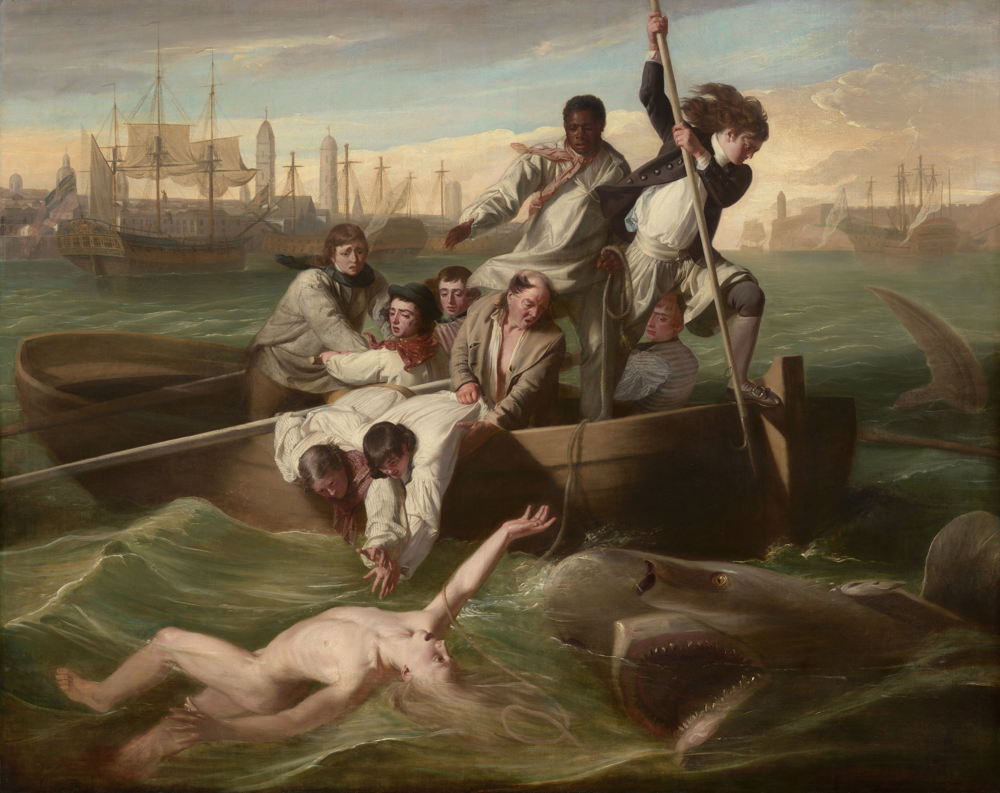

鲨鱼制造惊吓；那段尚未闭合的距离，制造悬念。
船员、沃森、鲨鱼各成三角；船身、手臂与鱼叉反向冲撞。远处水平港口稳住前景。
蓝绿与锈红互补但同时压灰；象牙肤色以最高明度前冲，危险因此潮湿、真实。
斜光扫过裸体、白袖与船缘，右侧沉入深海色。亮部像一条即将断开的救援链。
油画的柔和过渡塑造皮肤与天空，较硬高光点出湿布、浪尖和眼白；每张脸精确，群体动作却如舞台般编排。
事实：作品作于 1778 年，182.1 × 229.7 cm。科普利生于波士顿，后赴伦敦；画面顶端的黑人水手掌握关键救生绳，这一主动位置在当时并不寻常。
观点：希望不是结局，
而是一段被绷紧的距离。
勇气被拆成一条协作链：握绳、伸手、拉住同伴、举起鱼叉。无人足够完整，众人才接近完整。
John Singleton Copley，《Watson and the Shark》，1778，布面油画，182.1 × 229.7 cm；National Gallery of Art，1963.6.1。馆方标注作品媒体为 Public Domain；原图文件页标注 Public Domain Mark 1.0。图片版权归原作者及适用权利人；以来源页与使用地法律为准。赏析：每日艺术。色值为编辑近似。